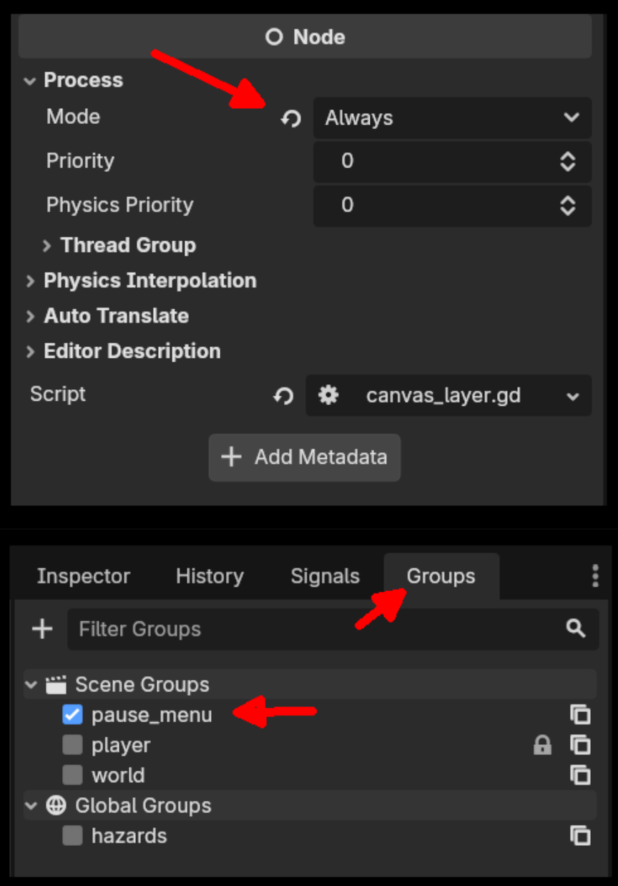
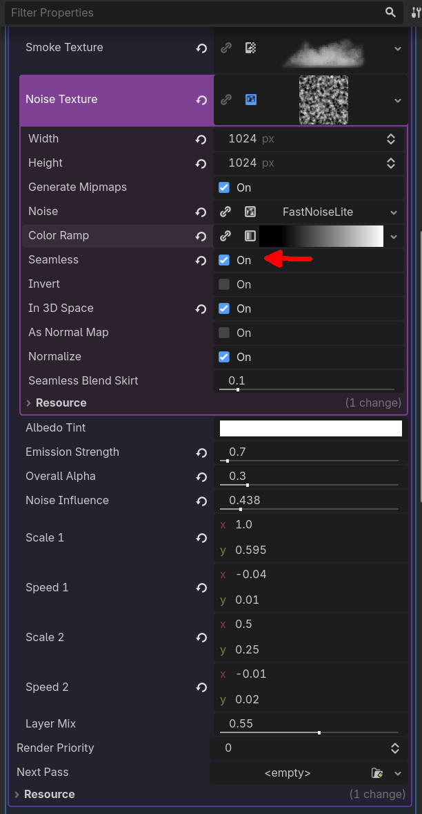

Complete Reference for Godot 4.6 - 3D Game Development
# Viewport Navigation (3D)
Middle Mouse - Orbit (rotate) camera
Shift + Middle - Pan camera
Scroll Wheel - Zoom in/out
Right Click + WASD - Fly mode (FPS-style navigation)
# Object Manipulation
Q - Select mode
W - Move mode
E - Rotate mode
R - Scale mode
# Modifier Keys for Precision
Ctrl + Drag - Snap to grid
Shift + Drag - Precise movement (slower)
Y - Toggle snapping
# Quick Actions
Ctrl + D - Duplicate selected nodes
Ctrl + Shift + C - Copy node path (Scene dock)
Delete/Backspace - Delete selected nodes
F - Focus on selected object
Ctrl + A - Add child node (Scene dock)# Editing
Ctrl + K - Toggle comment selection
Ctrl + I - Auto-indent selected lines
Alt + Up/Down - Move line(s) up/down
Ctrl + Click - Go to definition (symbol lookup)
F1 - Search help (API docs)
# Drag & Drop Workflows
Drag Node -> Script - Get node path (e.g., $Player/Camera)
Ctrl + Drag Node -> Script - Create @onready var code
Drag File -> Script - Get resource path ("res://...")
Ctrl + Drag File -> Script - Get UID path or preload ("uid://...")
Drag File -> Inspector - Assign resource to export varUIDs are unique identifiers for resources that remain stable even if you rename or move files. This prevents broken references in your project.
# Loading resources with UID (recommended)
@export var player_scene: PackedScene # Set in Inspector - uses UID automatically
@export var enemy_mesh: Mesh
# Traditional path-based loading (still works)
var scene = load("res://scenes/player.tscn")
# Loading with UID directly
var scene = load("uid://abc123def456")
# Getting UID of a resource
var uid = ResourceUID.id_to_text(ResourceLoader.get_resource_uid("res://player.tscn"))
print("UID: ", uid)UIDs prevent your game from breaking when you reorganize files. If you move "enemy.tscn" from "scenes/" to "scenes/enemies/", UID-based references keep resolving, because they point to the file's ID rather than its path.
# Path-based reference - tied to the file's exact path
const ENEMY = preload("res://scenes/enemy.tscn")
# UID-based - use @export; the Inspector stores a uid:// reference
@export var enemy_scene: PackedScene
func spawn_enemy():
var enemy = enemy_scene.instantiate()
add_child(enemy)
# The Inspector stores it as uid://... internally
# Even if you rename enemy.tscn, the reference stays valid!var health = 100 # Untyped (Variant) - use := to infer int
var speed: float = 5.0 # Explicit type annotation
var player_name := "Hero" # Type inferred from value
const MAX_HEALTH = 100 # Constant (cannot be changed)var integer: int = 42
var floating: float = 3.14
var text: String = "Hello"
var flag: bool = true
var tint: Color = Color.RED
var nothing = null
# Godot Engine Types (names avoid clashing with Node3D's built-in properties)
var target_position: Vector3 = Vector3(1.0, 2.0, 3.0)
var euler_rotation: Vector3
var direction: Vector3 = Vector3.FORWARD
var my_transform: Transform3D
var my_basis: Basis
var my_quaternion: Quaternion
var node_ref: Node# Basic Exports
@export var number: int = 5
@export var text: String = "Hello"
# Organization (Godot 4+)
@export_category("Player Stats") # Main separator
@export_group("Movement") # Collapsible group
@export_range(0, 100, 0.1) var speed: float = 10.0
@export_enum("Idle", "Walk", "Run") var state: String
@export_subgroup("Jump Settings")
@export var jump_height: float = 5.0
@export var air_control: bool = true
# Utilities
@export_file("*.png") var icon_path: String
@export_dir var save_path: String
@export_multiline var description: String
@export_flags("Fire", "Water", "Earth") var resistances: intVariables are perfect for managing player stats that can be tweaked in the Inspector. Export variables let designers balance the game without touching code.
extends CharacterBody3D
# Health system
@export_group("Health")
@export var max_health: int = 100
var current_health: int
# Movement system
@export_group("Movement")
@export var base_speed: float = 5.0
@export var sprint_multiplier: float = 1.5
@export var jump_velocity: float = 4.5
func _ready():
current_health = max_healthFaster for comparisons and Dictionary keys. Slightly slower to create, but better for frequent lookups like Input actions or Signals.
if Input.is_action_just_pressed(&"jump"):
print("Jumped!")
var weapons = { &"sword": 10, &"bow": 5 }Used specifically for pointing to nodes or properties. Since it's pre-parsed, Godot doesn't spend time parsing the string during execution.
var path = ^"Player/Camera3D"
var camera = get_node(path)
# Often used with Tweens
tween.tween_property(self, ^"position:x", 10.0, 1.0)Right-click a node in the scene tree and select "Access as Unique Name". You can then access it from any script in that same scene (unique names are scoped to the scene they're saved in) without needing the full path. Perfect for UI elements.
# Instead of full paths that break if you move nodes:
@onready var health_bar = $UI/MarginContainer/VBoxContainer/HealthBar
# Use a unique name (much safer):
@onready var health_bar = %HealthBarfunc function_name():
print("Hello World")
func add(a: int, b: int) -> int:
return a + b
func greet(name: String = "Guest") -> String:
return "Hello, " + name
# Multiple return values using Array
func get_position_and_health() -> Array:
return [Vector2(10, 20), 100]func _ready():
# Called when node enters scene tree
print("Node is ready")
func _process(delta: float):
# Called every frame
position.x += speed * delta
func _physics_process(delta: float):
# Called every physics frame (usually 60 FPS)
move_and_slide()
func _input(event: InputEvent):
# Called for every input event
if event is InputEventKey:
print("Key pressed")var add = func(a, b): return a + b
print(add.call(5, 3)) # Outputs: 8
# With arrays
var numbers = [1, 2, 3, 4]
var doubled = numbers.map(func(n): return n * 2)Functions organize game logic into reusable chunks. Lifecycle functions like _process() and _physics_process() are where most game mechanics happen.
extends CharacterBody3D
var player: Node3D
var speed: float = 3.0
var chase_distance: float = 15.0
func _ready():
player = get_tree().get_first_node_in_group("player")
func _physics_process(delta):
if should_chase_player():
chase_player(delta)
else:
patrol(delta)
func patrol(_delta: float):
pass # Your patrol logic here
func should_chase_player() -> bool:
return player and global_position.distance_to(player.global_position) < chase_distance
func chase_player(delta: float):
var direction = (player.global_position - global_position).normalized()
velocity = direction * speed
look_at(player.global_position, Vector3.UP)
move_and_slide()if health > 50:
print("Healthy")
elif health > 0:
print("Injured")
else:
print("Dead")
# Ternary operator
var status = "Alive" if health > 0 else "Dead"match state:
"idle":
play_idle_animation()
"running":
play_run_animation()
"jumping":
play_jump_animation()
_: # Default case
print("Unknown state")# For loop
for i in range(10):
print(i)
# Iterate over array
var items = ["sword", "shield", "potion"]
for item in items:
print(item)
# Iterate over array in reverse
for i in range(items.size() - 1, -1, -1):
var item = items[i]
print(item)
# While loop
while health > 0:
take_damage(10)
if should_escape():
break
if is_invulnerable():
continueMatch statements are perfect for state machines - a common pattern for controlling character behavior, animations, and game flow.
enum State { IDLE, RUNNING, JUMPING, FALLING, ATTACKING }
var current_state = State.IDLE
func _physics_process(delta):
match current_state:
State.IDLE:
handle_idle_state()
State.RUNNING:
handle_running_state()
State.JUMPING:
handle_jumping_state(delta)
State.ATTACKING:
handle_attacking_state()
func handle_idle_state():
if Input.is_action_pressed("move"):
current_state = State.RUNNING
elif Input.is_action_just_pressed("jump"):
current_state = State.JUMPING@tool # Script runs in editor
@icon("res://icon.png") # Custom icon for node
@onready var mesh = $MeshInstance3D # Initialize when node is ready
@export var speed: float = 5.0
@export_range(0, 100, 1) var health: int
@export_enum("Easy", "Medium", "Hard") var difficulty: String
@warning_ignore("unused_parameter") # Suppress specific warning
@rpc("any_peer") # Remote procedure call annotation# Create arrays
var empty_array = []
var numbers = [1, 2, 3, 4, 5]
var mixed = [1, "text", true, Vector3(0, 0, 0)]
var typed_array: Array[int] = [1, 2, 3]
# Array operations
numbers.append(6) # Add to end
numbers.push_back(7) # Same as append
numbers.push_front(0) # Add to beginning
numbers.insert(2, 99) # Insert at index
numbers.pop_back() # Remove and return last
numbers.pop_front() # Remove and return first
numbers.remove_at(1) # Remove at index
# Access
var first = numbers[0]
var last = numbers[-1]
var size = numbers.size()
# Array methods
var doubled = numbers.map(func(n): return n * 2)
var evens = numbers.filter(func(n): return n % 2 == 0)
var sum = numbers.reduce(func(acc, n): return acc + n, 0)Arrays are essential for managing collections of items like inventories, enemy spawns, and wave systems.
var inventory: Array[String] = []
const MAX_INVENTORY_SIZE = 20
func add_item(item_name: String) -> bool:
if inventory.size() >= MAX_INVENTORY_SIZE:
print("Inventory full!")
return false
inventory.append(item_name)
return true
func remove_item(item_name: String):
var index = inventory.find(item_name)
if index != -1:
inventory.remove_at(index)
func has_item(item_name: String) -> bool:
return inventory.has(item_name)# Create dictionaries
var empty_dict = {}
var player = {
"name": "Hero",
"health": 100,
"level": 5
}
# Access and modify
player["name"] = "Champion"
player.health = 95 # Dot notation
player["mana"] = 50 # Add new key
# Check if key exists
if "health" in player:
print(player["health"])
# Get with default value
var mana = player.get("mana", 0)
# Iterate
for key in player:
print(key, ": ", player[key])Dictionaries are perfect for save systems, configuration, and structured game data with named fields.
func save_game():
var save_data = {
"player_position": player.position,
"player_rotation": player.rotation,
"player_health": player.health,
"level": current_level,
"inventory": player.inventory,
"timestamp": Time.get_unix_time_from_system()
}
var file = FileAccess.open("user://save.dat", FileAccess.WRITE)
file.store_var(save_data)
file.close()
func load_game():
var file = FileAccess.open("user://save.dat", FileAccess.READ)
var data = file.get_var()
player.position = data.get("player_position", Vector3.ZERO)
player.health = data.get("player_health", 100)
file.close()class_name Player extends CharacterBody3D
var health: int = 100
var speed: float = 5.0
func _ready():
print("Player created")
func take_damage(amount: int):
health -= amount
if health <= 0:
die()
func die():
queue_free()class_name Boss extends Enemy
var shield: int = 100
func take_damage(amount: int):
if shield > 0:
shield -= amount
else:
super.take_damage(amount) # Call parent methodclass_name Utils
static var game_version: String = "1.0"
static func calculate_distance(a: Vector3, b: Vector3) -> float:
return a.distance_to(b)
# Usage:
var dist = Utils.calculate_distance(pos1, pos2)Classes and inheritance let you create a base enemy with shared behavior, then specialize it for different enemy types.
# Base enemy class
class_name Enemy extends CharacterBody3D
var health: int = 50
var speed: float = 3.0
var damage: int = 10
func take_damage(amount: int):
health -= amount
if health <= 0:
die()
func die():
queue_free()
# Flying enemy - moves in air
class_name FlyingEnemy extends Enemy
func _ready():
speed = 5.0 # Faster than base
health = 30 # But weaker
func _physics_process(delta):
# Can fly - ignore gravity
velocity.y = 0signal health_changed(new_health: int)
signal died
signal item_collected(item_name: String, quantity: int)func take_damage(amount: int):
health -= amount
health_changed.emit(health)
if health <= 0:
died.emit()func _ready():
health_changed.connect(_on_health_changed)
$Enemy.died.connect(_on_enemy_died)
func _on_health_changed(new_health: int):
print("Health is now: ", new_health)
func _on_enemy_died():
print("Enemy defeated!")Signals create decoupled, event-driven code. Perfect for updating UI, triggering effects, and coordinating between systems without tight coupling.
# Player script
signal health_changed(current: int, max_health: int)
signal died
var health = 100
func take_damage(amount: int):
health -= amount
health_changed.emit(health, 100)
if health <= 0:
died.emit()
# UI script
func _ready():
player.health_changed.connect(_on_player_health_changed)
func _on_player_health_changed(current: int, max_health: int):
$HealthBar.value = (float(current) / max_health) * 100# Get child node
var sprite = $Sprite2D
var sprite2 = get_node("Sprite2D")
# Get nested node
var hand = $Body/Arm/Hand
# Get parent
var parent = get_parent()
# Find nodes
var timer = find_child("Timer")
var all_enemies = get_tree().get_nodes_in_group("enemies")# Add node
var new_sprite = Sprite2D.new()
add_child(new_sprite)
# Remove node
$Enemy.queue_free() # Removes at end of frame (safe)
# Reparent
$Weapon.reparent($Player/Hand)# Add to group
add_to_group("enemies")
# Check if in group
if is_in_group("enemies"):
print("This is an enemy")
# Get all nodes in group
var enemies = get_tree().get_nodes_in_group("enemies")
for enemy in enemies:
enemy.take_damage(10)# Change scene
get_tree().change_scene_to_file("res://scenes/main_menu.tscn")
# Load and instantiate scene
var enemy_scene = load("res://scenes/enemy.tscn")
var enemy = enemy_scene.instantiate()
add_child(enemy)
# Reload current scene
get_tree().reload_current_scene()Node management is essential for spawning enemies, projectiles, particles, and managing dynamic game objects.
extends Node3D
const ENEMY_SCENE = preload("res://scenes/enemy.tscn")
var spawn_points: Array[Node3D] = []
func _ready():
spawn_points.assign(get_tree().get_nodes_in_group("spawn_points"))
func spawn_wave(enemy_count: int):
for i in enemy_count:
var enemy = ENEMY_SCENE.instantiate()
var spawn_point = spawn_points.pick_random()
add_child(enemy)
enemy.global_position = spawn_point.global_position # set after add_child (must be in the tree)
enemy.add_to_group("enemies")# item_resource.gd
class_name ItemResource extends Resource
@export var item_name: String = ""
@export var icon: Texture2D
@export var value: int = 0
@export var description: String = ""
func use():
print("Using ", item_name)# Load resource file
var item = load("res://items/health_potion.tres") as ItemResource
# Preload (at compile time)
const HEALTH_POTION = preload("res://items/health_potion.tres")Resources are perfect for creating data-driven game content. Design items, weapons, enemies, and levels as resources that can be edited in the Inspector.
class_name WeaponResource extends Resource
@export var weapon_name: String
@export var damage: int
@export var fire_rate: float
@export var sprite: Texture2D
# In player script:
@export var starting_weapon: WeaponResource
func equip_weapon(weapon: WeaponResource):
$Sprite.texture = weapon.sprite
attack_damage = weapon.damagefunc _process(delta):
# Check if action is pressed
if Input.is_action_pressed("move_right"):
position.x += speed * delta
if Input.is_action_just_pressed("jump"):
jump()
if Input.is_action_just_released("shoot"):
stop_shooting()
# Get input strength (for analog sticks)
var input_vector = Input.get_vector("move_left", "move_right", "move_up", "move_down")
velocity = input_vector * speed# Mouse position
var mouse_pos = get_viewport().get_mouse_position()
var global_mouse_pos = get_global_mouse_position() # 2D only - in 3D use camera.project_ray_origin()
# Check specific keys
if Input.is_key_pressed(KEY_SPACE):
print("Space is held down")
# Check mouse buttons
if Input.is_mouse_button_pressed(MOUSE_BUTTON_LEFT):
print("Left mouse button is down")func _input(event):
# Captures all input first (even if UI handled it)
# Use sparingly!
pass
func _unhandled_input(event):
# Best for gameplay logic (movement, shooting)
# Only called if UI didn't consume the event
if event is InputEventMouseMotion:
rotate_y(-event.relative.x * mouse_sensitivity)
if event.is_action_pressed("jump"):
jump()Input.get_vector() is perfect for smooth 8-direction movement with controller support and normalized diagonal movement.
extends CharacterBody3D
@export var speed: float = 5.0
@export var jump_velocity: float = 4.5
var gravity = ProjectSettings.get_setting("physics/3d/default_gravity")
func _physics_process(delta):
# Add gravity
if not is_on_floor():
velocity.y -= gravity * delta
# Handle jump
if Input.is_action_just_pressed("jump") and is_on_floor():
velocity.y = jump_velocity
# Get input direction (WASD/arrow keys)
var input_dir = Input.get_vector("left", "right", "forward", "back")
var direction = (transform.basis * Vector3(input_dir.x, 0, input_dir.y)).normalized()
if direction:
velocity.x = direction.x * speed
velocity.z = direction.z * speed
else:
velocity.x = move_toward(velocity.x, 0, speed)
velocity.z = move_toward(velocity.z, 0, speed)
move_and_slide()# Create a script: game_manager.gd
extends Node
var score: int = 0
var player_name: String = ""
func add_score(points: int):
score += points
print("Score: ", score)
# Add to Project > Project Settings > Autoload
# Then use anywhere:
GameManager.add_score(10)
print(GameManager.score)# Using Timer node
func _ready():
$Timer.wait_time = 2.0
$Timer.one_shot = true
$Timer.timeout.connect(_on_timer_timeout)
$Timer.start()
# Using await (Godot 4+)
func delayed_action():
print("Starting...")
await get_tree().create_timer(2.0).timeout
print("2 seconds later")func fade_out():
var tween = create_tween()
tween.tween_property($Sprite2D, "modulate:a", 0.0, 1.0)
await tween.finished
queue_free()
func move_to_position(target_pos: Vector3):
var tween = create_tween()
tween.set_trans(Tween.TRANS_ELASTIC)
tween.set_ease(Tween.EASE_OUT)
tween.tween_property(self, "position", target_pos, 1.0)# Random integer
var random_int = randi() % 100 # 0 to 99
var random_range = randi_range(1, 6) # 1 to 6 (dice roll)
# Random float
var random_float = randf() # 0.0 to 1.0
var random_float_range = randf_range(0.0, 10.0)
# Random from array
var items = ["sword", "shield", "potion"]
var random_item = items.pick_random()Timers and tweens are perfect for temporary power-ups, cooldowns, delayed actions, and smooth animations.
var normal_speed: float = 5.0
var boost_speed: float = 10.0
var is_boosted: bool = false
func activate_speed_boost():
if is_boosted:
return
is_boosted = true
speed = boost_speed
# Flash effect (needs an override material set on the mesh)
var material = $MeshInstance3D.get_surface_override_material(0)
var tween = create_tween()
tween.tween_property(material, "albedo_color", Color.YELLOW, 0.2)
# Wait 5 seconds then deactivate
await get_tree().create_timer(5.0).timeout
deactivate_speed_boost()
func deactivate_speed_boost():
speed = normal_speed
is_boosted = false
var material = $MeshInstance3D.get_surface_override_material(0)
material.albedo_color = Color.WHITEvar a = Vector3(1, 2, 3)
var b = Vector3(4, 5, 6)
# Basic operations
var length = a.length() # Magnitude
var normalized = a.normalized() # Unit vector
var distance = a.distance_to(b) # Distance between points
var direction = a.direction_to(b) # Normalized direction
# Dot and cross product
var dot = a.dot(b) # -1 to 1, facing check
var cross = a.cross(b) # Perpendicular vector
# Interpolation
var lerped = a.lerp(b, 0.5) # Linear interpolation
var slerped = a.slerp(b, 0.5) # Spherical interpolation
# Angles
var angle = a.angle_to(b) # Angle in radians
var signed = a.signed_angle_to(b, Vector3.UP)# Create quaternion from euler angles
var quat = Quaternion.from_euler(Vector3(0, deg_to_rad(90), 0))
# Rotate around axis
var quat2 = Quaternion(Vector3.UP, deg_to_rad(45))
# Smooth rotation interpolation
var current_rot: Quaternion
var target_rot: Quaternion
current_rot = current_rot.slerp(target_rot, delta * 5.0)
# Apply to transform
transform.basis = Basis(current_rot)# Get direction vectors from transform
var forward = -transform.basis.z # Forward is -Z in Godot
var right = transform.basis.x
var up = transform.basis.y
# Rotate basis
transform.basis = transform.basis.rotated(Vector3.UP, deg_to_rad(45))
# Create basis looking at target
var look_basis = Basis.looking_at(target_pos - global_position, Vector3.UP)Use dot product to check if an enemy is facing the player (for stealth games, FOV checks, etc.).
func can_see_target(target: Node3D, fov_degrees: float) -> bool:
var to_target = (target.global_position - global_position).normalized()
var forward = -global_transform.basis.z
var dot = forward.dot(to_target)
var threshold = cos(deg_to_rad(fov_degrees / 2.0))
return dot > threshold # True if target within FOV cone# StaticBody3D - Immovable (walls, floors)
# RigidBody3D - Physics-driven (crates, balls)
# CharacterBody3D - Player-controlled
# Area3D - Trigger zones (no collision response)
extends RigidBody3D
func _ready():
mass = 10.0
gravity_scale = 1.0
linear_damp = 0.1
angular_damp = 0.1
func apply_explosion_force(center: Vector3, force: float):
var direction = (global_position - center).normalized()
apply_central_impulse(direction * force)# Layer = What this object IS
# Mask = What this object DETECTS
# Layer 1: Player, Layer 2: Enemies, Layer 3: Projectiles
func _ready():
collision_layer = 1 # I am on layer 1
collision_mask = 2 | 4 # I detect layers 2 and 3
# Set specific layer bit
set_collision_layer_value(1, true) # Enable layer 1
set_collision_mask_value(2, true) # Detect layer 2func shoot_raycast():
var space_state = get_world_3d().direct_space_state
var origin = $Camera3D.global_position
var end = origin - $Camera3D.global_transform.basis.z * 100
var query = PhysicsRayQueryParameters3D.create(origin, end)
query.collision_mask = 0b0011 # Layers 1 and 2
query.exclude = [self]
var result = space_state.intersect_ray(query)
if result:
print("Hit: ", result.collider.name)
print("Position: ", result.position)
print("Normal: ", result.normal)extends Area3D
func _ready():
body_entered.connect(_on_body_entered)
body_exited.connect(_on_body_exited)
func _on_body_entered(body: Node3D):
if body.is_in_group("player"):
print("Player entered zone")
func _on_body_exited(body: Node3D):
if body.is_in_group("player"):
print("Player left zone")Raycasting is perfect for hitscan weapons. Use it to detect what the bullet hits instantly without spawning projectiles.
func fire_weapon():
var space = get_world_3d().direct_space_state
var cam = $Camera3D
var from = cam.global_position
var to = from - cam.global_transform.basis.z * 1000
var query = PhysicsRayQueryParameters3D.create(from, to)
query.collision_mask = 0b0110 # Layers 2-3: set to match your Enemies/World layers
var hit = space.intersect_ray(query)
if hit:
if hit.collider.has_method("take_damage"):
hit.collider.take_damage(25)
spawn_impact_effect(hit.position, hit.normal)extends CharacterBody3D
@export var mouse_sensitivity: float = 0.002
@onready var camera = $Camera3D
func _ready():
Input.set_mouse_mode(Input.MOUSE_MODE_CAPTURED)
func _input(event):
if event is InputEventMouseMotion:
rotate_y(-event.relative.x * mouse_sensitivity)
camera.rotate_x(-event.relative.y * mouse_sensitivity)
camera.rotation.x = clamp(camera.rotation.x, deg_to_rad(-89), deg_to_rad(89))extends Camera3D
@export var target: Node3D
@export var offset: Vector3 = Vector3(0, 3, 5)
@export var smooth_speed: float = 5.0
func _physics_process(delta):
if not target:
return
var target_pos = target.global_position + offset
global_position = global_position.lerp(target_pos, smooth_speed * delta)
look_at(target.global_position, Vector3.UP)# Look at target
camera.look_at(target.global_position, Vector3.UP)
# Screen point to ray (for mouse picking)
var mouse_pos = get_viewport().get_mouse_position()
var from = camera.project_ray_origin(mouse_pos)
var to = from + camera.project_ray_normal(mouse_pos) * 1000
# Project a world point to screen space
var screen_pos = camera.unproject_position(world_pos)
var is_behind = camera.is_position_behind(world_pos)
var on_screen = not is_behind and get_viewport().get_visible_rect().has_point(screen_pos)# Create material in code
var mat = StandardMaterial3D.new()
mat.albedo_color = Color.RED
mat.metallic = 0.8
mat.roughness = 0.2
# Apply texture
mat.albedo_texture = load("res://textures/brick.png")
# Transparency
mat.transparency = BaseMaterial3D.TRANSPARENCY_ALPHA
mat.albedo_color.a = 0.5
# Emission (glow)
mat.emission_enabled = true
mat.emission = Color.CYAN
mat.emission_energy_multiplier = 2.0
# Apply to mesh
$MeshInstance3D.material_override = mat# Get the material currently shown (mesh or override)
var mat = $MeshInstance3D.get_active_material(0)
# Make unique copy to avoid affecting other instances
mat = mat.duplicate()
$MeshInstance3D.set_surface_override_material(0, mat)
# Now modify safely
mat.albedo_color = Color.GREENFlash the enemy red when taking damage using emission.
func flash_damage():
var mat = $MeshInstance3D.get_surface_override_material(0) # null unless an override material is set
mat.emission_enabled = true
mat.emission = Color.RED
mat.emission_energy_multiplier = 3.0
var tween = create_tween()
tween.tween_property(mat, "emission_energy_multiplier", 0.0, 0.2)
await tween.finished
mat.emission_enabled = false# DirectionalLight3D - Sun, infinite range
# OmniLight3D - Point light, emits in all directions
# SpotLight3D - Cone-shaped light
# Create dynamic light at runtime
var light = OmniLight3D.new()
light.light_color = Color.ORANGE
light.light_energy = 2.0
light.omni_range = 10.0
light.shadow_enabled = true
add_child(light)
# SpotLight3D for flashlight
var flashlight = SpotLight3D.new()
flashlight.spot_range = 20.0
flashlight.spot_angle = 25.0 # Cone angle in degrees# Access environment settings
var env = $WorldEnvironment.environment
# Ambient light
env.ambient_light_color = Color.WHITE
env.ambient_light_energy = 0.3
env.ambient_light_source = Environment.AMBIENT_SOURCE_SKY
# Fog
env.fog_enabled = true
env.fog_light_color = Color(0.5, 0.6, 0.7)
env.fog_density = 0.01
# Glow/Bloom
env.glow_enabled = true
env.glow_intensity = 1.0
env.glow_bloom = 0.5Dynamic lights create impactful weapon effects and explosions.
@onready var muzzle_light = $MuzzleLight
func fire_weapon():
muzzle_light.light_energy = 3.0
var tween = create_tween()
tween.tween_property(muzzle_light, "light_energy", 0.0, 0.1)@onready var anim = $AnimationPlayer
# Play animation
anim.play("walk")
anim.play("attack", -1, 2.0) # 2x speed
anim.play_backwards("door_open")
# Queue animation
anim.queue("idle")
# Stop and reset
anim.stop()
anim.seek(0, true) # Seek to start
# Check state
if anim.is_playing():
var current = anim.current_animation@onready var anim_tree = $AnimationTree
@onready var state_machine = anim_tree["parameters/playback"]
func _ready():
anim_tree.active = true
func _physics_process(delta):
# Transition to different states
if velocity.length() > 0.1:
state_machine.travel("Run")
else:
state_machine.travel("Idle")
# Set blend parameters
anim_tree["parameters/blend_position"] = velocity.length() / max_speedUse AnimationTree BlendSpace2D for smooth movement transitions based on velocity.
func update_animation():
var local_vel = global_transform.basis.inverse() * velocity
var blend = Vector2(local_vel.x, -local_vel.z) / max_speed
anim_tree["parameters/BlendSpace2D/blend_position"] = blend@onready var audio = $AudioStreamPlayer3D
# Play sound at position
audio.play()
audio.stop()
# Configure 3D audio
audio.max_distance = 50.0
audio.unit_size = 10.0
audio.attenuation_model = AudioStreamPlayer3D.ATTENUATION_INVERSE_DISTANCE
# Create audio at runtime
var player = AudioStreamPlayer3D.new()
player.stream = load("res://audio/explosion.ogg")
player.bus = "SFX"
add_child(player)
player.play()# Set volume (in decibels)
AudioServer.set_bus_volume_db(AudioServer.get_bus_index("Master"), -10.0)
AudioServer.set_bus_volume_db(AudioServer.get_bus_index("Music"), -5.0)
# Mute bus
AudioServer.set_bus_mute(AudioServer.get_bus_index("SFX"), true)
# Convert linear volume to decibels
var db = linear_to_db(volume_slider.value)
var linear = db_to_linear(db_value)Play randomized positional footstep sounds that others can hear in 3D space.
var footstep_sounds: Array[AudioStream] = []
@onready var footstep_player = $FootstepAudio
func play_footstep():
footstep_player.stream = footstep_sounds.pick_random()
footstep_player.pitch_scale = randf_range(0.9, 1.1)
footstep_player.play()extends CharacterBody3D
@onready var nav_agent = $NavigationAgent3D
var movement_speed: float = 4.0
func _ready():
nav_agent.path_desired_distance = 0.5
nav_agent.target_desired_distance = 0.5
func set_target(target_pos: Vector3):
nav_agent.target_position = target_pos
func _physics_process(delta):
if nav_agent.is_navigation_finished():
return
var next_pos = nav_agent.get_next_path_position()
var direction = (next_pos - global_position).normalized()
velocity = direction * movement_speed
move_and_slide()# Runtime navmesh baking
@onready var nav_region = $NavigationRegion3D
func rebake_navmesh():
nav_region.bake_navigation_mesh()
# Check if point is on navmesh
var nav_map = get_world_3d().navigation_map
var closest = NavigationServer3D.map_get_closest_point(nav_map, world_pos)Enemies that navigate around obstacles to chase the player.
var player: Node3D
func _physics_process(delta):
if player:
nav_agent.target_position = player.global_position
if not nav_agent.is_navigation_finished():
var next = nav_agent.get_next_path_position()
var dir = (next - global_position).normalized()
velocity = dir * speed
look_at(global_position + dir, Vector3.UP)
move_and_slide()# Write to file
func save_game():
var file = FileAccess.open("user://savegame.dat", FileAccess.WRITE)
if file:
file.store_var({"player_name": "Hero", "level": 5})
file.close()
# Read from file
func load_game():
if FileAccess.file_exists("user://savegame.dat"):
var file = FileAccess.open("user://savegame.dat", FileAccess.READ)
if file:
var data = file.get_var()
file.close()
return data
return nullfunc save_json():
var data = {"name": "Player", "score": 100}
var json_string = JSON.stringify(data)
var file = FileAccess.open("user://save.json", FileAccess.WRITE)
file.store_string(json_string)
file.close()
func load_json():
var file = FileAccess.open("user://save.json", FileAccess.READ)
var json_string = file.get_as_text()
file.close()
var json = JSON.new()
var error = json.parse(json_string)
if error == OK:
return json.data
return nullvar text = "Hello World"
# Formatting
var formatted = "Player: %s, Score: %d" % ["Alice", 100]
var formatted2 = "Health: {0}/{1}".format([health, max_health])
# Methods
text.to_upper() # "HELLO WORLD"
text.to_lower() # "hello world"
text.length() # 11
text.substr(0, 5) # "Hello"
text.split(" ") # ["Hello", "World"]
text.replace("World", "Godot") # "Hello Godot"
text.begins_with("Hello") # true
text.contains("llo") # true# Math
abs(-5) # 5
clamp(value, 0, 100) # Limit value between 0 and 100
lerp(0, 10, 0.5) # Linear interpolation: 5
move_toward(current, target, delta) # Move towards target
min(5, 10) # 5
max(5, 10) # 10
sign(-5) # -1 (returns -1, 0, or 1)
pow(2, 3) # 8.0
sqrt(16) # 4.0
floor(3.7) # 3.0
ceil(3.2) # 4.0
round(3.5) # 4.0
# Debugging
print_rich("[color=red]Error![/color]")
push_error("Critical failure")
push_warning("Missing texture")
assert(health > 0, "Player is dead!")
print_stack()# Fill the whole screen (root Control of a menu)
set_anchors_and_offsets_preset(Control.PRESET_FULL_RECT)
# Pin a widget to a corner (e.g. score, top-right)
$ScoreLabel.set_anchors_and_offsets_preset(Control.PRESET_TOP_RIGHT)
# Inside a container: use size flags, not anchors
$HealthBar.size_flags_horizontal = Control.SIZE_EXPAND_FILL
$HealthBar.custom_minimum_size = Vector2(200, 24)# hud.gd - attached to the CanvasLayer root
extends CanvasLayer
# % = Scene Unique Name (right-click node > Access as Unique Name)
@onready var health_bar: ProgressBar = %HealthBar
@onready var score_label: Label = %ScoreLabel
func set_health(current: int, maximum: int) -> void:
health_bar.max_value = maximum
health_bar.value = current
func set_score(points: int) -> void:
score_label.text = "Score: %d" % pointsextends Control
@onready var play_button: Button = %PlayButton
@onready var quit_button: Button = %QuitButton
func _ready() -> void:
play_button.pressed.connect(_on_play_pressed)
quit_button.pressed.connect(get_tree().quit)
play_button.grab_focus() # Keyboard/gamepad navigation starts here
func _on_play_pressed() -> void:
get_tree().change_scene_to_file("res://scenes/main.tscn")
# Optional: control where Up/Down moves focus
# play_button.focus_neighbor_bottom = quit_button.get_path()# Menus: show the cursor. Gameplay (FPS): capture it.
Input.mouse_mode = Input.MOUSE_MODE_VISIBLE
Input.mouse_mode = Input.MOUSE_MODE_CAPTURED
# HUD elements that must not block clicks on what's behind them
$HUD/Panel.mouse_filter = Control.MOUSE_FILTER_IGNORElabel.horizontal_alignment = HORIZONTAL_ALIGNMENT_CENTER
label.add_theme_font_size_override("font_size", 32)
label.add_theme_color_override("font_color", Color.RED)
# Spacing inside a container
$VBoxContainer.add_theme_constant_override("separation", 12)
# Restyle everything at once: assign a Theme resource to the
# root Control; all children inherit it.
$MenuRoot.theme = preload("res://ui/main_theme.tres")Connect the player's health signal straight to the HUD, and tween the bar so damage drains smoothly instead of snapping.
# hud.gd - replaces set_health() above
func set_health(current: int, maximum: int) -> void:
health_bar.max_value = maximum
var tween = create_tween()
tween.tween_property(health_bar, "value", current, 0.25)
# main.gd - connect once; signal args match set_health(current, max)
@onready var player = $Player
@onready var hud = $HUD
func _ready() -> void:
player.health_changed.connect(hud.set_health)print("health = ", health)
print_debug("also shows script and line number")
print_rich("[color=yellow]Low ammo[/color]")
push_warning("Missing texture") # Yellow, shown in Errors tab
push_error("Spawner has no spawn points") # Red, shown in Errors tab
assert(speed > 0, "speed must be positive") # Debug builds only
breakpoint # Pauses the game here when run from the editor
# Print the live scene tree below a node
get_tree().current_scene.print_tree_pretty()
# Keep debug-only code out of release builds
if OS.is_debug_build():
print("only in debug")# Reference may have been freed
if is_instance_valid(target):
look_at(target.global_position, Vector3.UP)
# Node must be in the tree before using global_position
add_child(enemy)
enemy.global_position = spawn_point.global_position
# Physics callback: defer state changes
func _on_body_entered(body: Node3D) -> void:
$CollisionShape3D.set_deferred("disabled", true)
# Await something the node owns, so it dies with the node
var tween = create_tween()
tween.tween_property(self, "scale", Vector3.ZERO, 0.3)
await tween.finished
queue_free()
# Typed array from a group
var spawns: Array[Node3D] = []
spawns.assign(get_tree().get_nodes_in_group("spawn_points"))
# Connect once
if not button.pressed.is_connected(_on_pressed):
button.pressed.connect(_on_pressed)A toggleable overlay for FPS and player position. Add it as a CanvasLayer with a Label child named Info, and put your player in the "player" group.
# debug_overlay.gd
extends CanvasLayer
@onready var info: Label = $Info
func _ready() -> void:
visible = false
process_mode = Node.PROCESS_MODE_ALWAYS # Works while paused
func _unhandled_input(event: InputEvent) -> void:
if event is InputEventKey and event.pressed and event.keycode == KEY_F3:
visible = not visible
func _process(_delta: float) -> void:
if not visible:
return
info.text = "FPS: %d" % Engine.get_frames_per_second()
var player = get_tree().get_first_node_in_group("player")
if player:
info.text += "\nPos: %s" % player.global_position.snapped(Vector3.ONE * 0.1)# main.gd - the parent wires its children together
extends Node3D
@onready var player: Player = $Player
@onready var hud = $HUD
func _ready() -> void:
player.health_changed.connect(hud.set_health)
player.died.connect(_on_player_died)
# player.gd - the child only announces what happened
signal health_changed(current: int, maximum: int)
signal died
func take_damage(amount: int) -> void:
health -= amount
health_changed.emit(health, max_health)
if health <= 0:
died.emit()
# Avoid: the child reaches up and breaks if the tree changes
# get_parent().get_node("HUD").set_health(health)# events.gd - add under Project Settings > Globals > Autoload as "Events"
extends Node
@warning_ignore("unused_signal") # Emitted from other scripts
signal enemy_killed(enemy: Node3D, points: int)
@warning_ignore("unused_signal")
signal item_collected(item_name: String)
# Where it happens (any script):
Events.enemy_killed.emit(self, 100)
# Whoever cares (HUD, quests, audio...) listens without knowing the source:
func _ready() -> void:
Events.enemy_killed.connect(_on_enemy_killed)
func _on_enemy_killed(enemy: Node3D, points: int) -> void:
score += pointsOne component handles health for every entity. Anything that can be damaged just has a HealthComponent child.
# health_component.gd
class_name HealthComponent extends Node
signal health_changed(current: int, maximum: int)
signal died
@export var max_health: int = 100
var current: int
func _ready() -> void:
current = max_health # Exports are applied before _ready
func take_damage(amount: int) -> void:
current = maxi(current - amount, 0)
health_changed.emit(current, max_health)
if current == 0:
died.emit()
# enemy.gd - the owner reacts to its own component
func _ready() -> void:
$HealthComponent.died.connect(queue_free)
# bullet.gd - works on anything with a HealthComponent child
func _on_body_entered(body: Node3D) -> void:
var health = body.get_node_or_null("HealthComponent") as HealthComponent
if health:
health.take_damage(25)
queue_free()# Add projectiles to the level, not to the shooter,
# so they don't inherit the shooter's movement
var bullet = bullet_scene.instantiate()
get_tree().current_scene.add_child(bullet)
bullet.global_transform = muzzle.global_transform# settings.gd - add as an Autoload named "Settings"
extends Node
const PATH = "user://settings.cfg"
var config := ConfigFile.new()
func _ready() -> void:
config.load(PATH) # No file yet? Defaults are used
apply_settings()
func get_setting(section: String, key: String, default: Variant) -> Variant:
return config.get_value(section, key, default)
func set_setting(section: String, key: String, value: Variant) -> void:
config.set_value(section, key, value)
func save_settings() -> void:
config.save(PATH)# Also in settings.gd
func apply_settings() -> void:
# Audio: store linear 0-1, convert to dB
var volume: float = get_setting("audio", "master", 1.0)
var bus = AudioServer.get_bus_index("Master")
AudioServer.set_bus_mute(bus, volume <= 0.0)
AudioServer.set_bus_volume_db(bus, linear_to_db(maxf(volume, 0.0001)))
# Window mode
if get_setting("video", "fullscreen", false):
DisplayServer.window_set_mode(DisplayServer.WINDOW_MODE_FULLSCREEN)
else:
DisplayServer.window_set_mode(DisplayServer.WINDOW_MODE_WINDOWED)
# VSync
if get_setting("video", "vsync", true):
DisplayServer.window_set_vsync_mode(DisplayServer.VSYNC_ENABLED)
else:
DisplayServer.window_set_vsync_mode(DisplayServer.VSYNC_DISABLED)
# Saved key bindings
if config.has_section("input"):
for action in config.get_section_keys("input"):
_set_key(action, config.get_value("input", action))# volume_slider.gd - HSlider with min 0, max 1, step 0.01
extends HSlider
func _ready() -> void:
value = Settings.get_setting("audio", "master", 1.0)
value_changed.connect(_on_value_changed)
drag_ended.connect(_on_drag_ended)
func _on_value_changed(new_value: float) -> void:
Settings.set_setting("audio", "master", new_value)
Settings.apply_settings() # Live preview while dragging
func _on_drag_ended(_changed: bool) -> void:
Settings.save_settings() # Write the file once, not on every tick# Read the current bindings of an action
for event in InputMap.action_get_events("jump"):
print(event.as_text())
# Also in settings.gd: replace the keyboard binding, keep gamepad ones
func rebind_key(action: String, keycode: Key) -> void:
_set_key(action, keycode)
config.set_value("input", action, keycode) # Save the keycode as an int
save_settings()
func _set_key(action: String, keycode: Key) -> void:
for e in InputMap.action_get_events(action):
if e is InputEventKey:
InputMap.action_erase_event(action, e)
var ev := InputEventKey.new()
ev.physical_keycode = keycode
InputMap.action_add_event(action, ev)
func reset_keys() -> void:
InputMap.load_from_project_settings() # Back to the Project Settings defaults
config.erase_section("input")
save_settings()Put one of these in your controls menu per action. Click it, press a key, and the binding changes and is saved. Esc cancels.
extends Button
@export var action: String = "jump"
var listening := false
func _ready() -> void:
pressed.connect(_start_listening)
_refresh()
func _start_listening() -> void:
listening = true
text = "Press a key... (Esc to cancel)"
func _input(event: InputEvent) -> void:
if not listening or not (event is InputEventKey and event.pressed and not event.echo):
return
get_viewport().set_input_as_handled()
listening = false
if event.keycode != KEY_ESCAPE:
Settings.rebind_key(action, event.physical_keycode)
_refresh()
func _refresh() -> void:
text = "Unbound"
for e in InputMap.action_get_events(action):
if e is InputEventKey:
text = e.as_text_physical_keycode()func make_spark_burst() -> GPUParticles3D:
# What each particle looks like: a small camera-facing quad
var mat := StandardMaterial3D.new()
mat.billboard_mode = BaseMaterial3D.BILLBOARD_PARTICLES
mat.shading_mode = BaseMaterial3D.SHADING_MODE_UNSHADED
mat.vertex_color_use_as_albedo = true # Needed for the color fade
mat.transparency = BaseMaterial3D.TRANSPARENCY_ALPHA
var mesh := QuadMesh.new()
mesh.size = Vector2(0.1, 0.1)
mesh.material = mat
# How they move
var pm := ParticleProcessMaterial.new()
pm.direction = Vector3(0, 0, -1)
pm.spread = 40.0
pm.initial_velocity_min = 3.0
pm.initial_velocity_max = 6.0
pm.gravity = Vector3(0, -9.8, 0)
# Fade from orange to transparent over the lifetime
var grad := Gradient.new()
grad.set_color(0, Color(1.0, 0.7, 0.2, 1.0))
grad.set_color(1, Color(1.0, 0.2, 0.0, 0.0))
var ramp := GradientTexture1D.new()
ramp.gradient = grad
pm.color_ramp = ramp
var fx := GPUParticles3D.new()
fx.amount = 16
fx.lifetime = 0.4
fx.one_shot = true
fx.explosiveness = 1.0
fx.process_material = pm
fx.draw_pass_1 = mesh
return fx# impact_effect.gd - root script of impact_effect.tscn (a GPUParticles3D)
extends GPUParticles3D
func _ready() -> void:
one_shot = true
emitting = true
finished.connect(queue_free) # Clean up when the last particle fades
# Replay an effect that already exists in the scene
$MuzzleSparks.restart()This defines the spawn_impact_effect() function that the Hitscan Weapon example calls. Set the effect's direction to (0, 0, -1) so the sparks shoot out along the surface normal.
const IMPACT = preload("res://effects/impact_effect.tscn")
func spawn_impact_effect(pos: Vector3, normal: Vector3) -> void:
var fx = IMPACT.instantiate()
get_tree().current_scene.add_child(fx) # In the tree before positioning
fx.global_position = pos
# look_at fails if the normal is parallel to the up vector
var up = Vector3.UP if abs(normal.dot(Vector3.UP)) < 0.99 else Vector3.RIGHT
fx.look_at(pos + normal, up)💡 Smart Escape: First Esc releases mouse, second Esc quits the game.
extends CharacterBody3D
const SPEED = 5.0
const JUMP_VELOCITY = 4.5
@export var mouse_sensitivity = 0.002
@onready var camera = $Camera3D
func _ready():
# Essential for First Person: Capture the mouse
Input.mouse_mode = Input.MOUSE_MODE_CAPTURED
func _unhandled_input(event: InputEvent) -> void:
# Click to capture mouse
if event is InputEventMouseButton:
Input.mouse_mode = Input.MOUSE_MODE_CAPTURED
# Mouse Look Logic
if event is InputEventMouseMotion and Input.mouse_mode == Input.MOUSE_MODE_CAPTURED:
rotate_y(-event.relative.x * mouse_sensitivity)
camera.rotate_x(-event.relative.y * mouse_sensitivity)
camera.rotation.x = clamp(camera.rotation.x, deg_to_rad(-89), deg_to_rad(89))
# Smart Escape: Release mouse first, then Quit
if event.is_action_pressed("ui_cancel"):
if Input.mouse_mode == Input.MOUSE_MODE_CAPTURED:
Input.mouse_mode = Input.MOUSE_MODE_VISIBLE
else:
get_tree().quit()
func _physics_process(delta: float) -> void:
# Add gravity (Godot 4.3+ style)
if not is_on_floor():
velocity += get_gravity() * delta
# Handle Jump
if Input.is_action_just_pressed("ui_accept") and is_on_floor():
velocity.y = JUMP_VELOCITY
# Get direction input (WASD/Arrows)
var input_dir := Input.get_vector("ui_left", "ui_right", "ui_up", "ui_down")
var direction := (transform.basis * Vector3(input_dir.x, 0, input_dir.y)).normalized()
if direction:
velocity.x = direction.x * SPEED
velocity.z = direction.z * SPEED
else:
velocity.x = move_toward(velocity.x, 0, SPEED)
velocity.z = move_toward(velocity.z, 0, SPEED)
move_and_slide()extends CharacterBody3D
const WALK_SPEED = 5.0
const FLY_SPEED = 15.0
const JUMP_VELOCITY = 4.5
@export var mouse_sensitivity = 0.002
@export var is_flying = false
@onready var camera = $Camera3D
func _ready():
Input.mouse_mode = Input.MOUSE_MODE_CAPTURED
func _unhandled_input(event: InputEvent) -> void:
if event.is_action_pressed("fly"):
is_flying = !is_flying
velocity = Vector3.ZERO # Reset momentum on toggle
# Smart Escape: Release mouse first, then Quit
if event.is_action_pressed("ui_cancel"):
if Input.mouse_mode == Input.MOUSE_MODE_CAPTURED:
Input.mouse_mode = Input.MOUSE_MODE_VISIBLE
else:
get_tree().quit()
if event is InputEventMouseMotion and Input.mouse_mode == Input.MOUSE_MODE_CAPTURED:
rotate_y(-event.relative.x * mouse_sensitivity)
camera.rotate_x(-event.relative.y * mouse_sensitivity)
camera.rotation.x = clamp(camera.rotation.x, deg_to_rad(-89), deg_to_rad(89))
func _physics_process(delta: float) -> void:
var input_dir = Input.get_vector("ui_left", "ui_right", "ui_up", "ui_down")
if is_flying:
# Flight: direction follows camera orientation (includes Y axis)
var direction = (camera.global_transform.basis * Vector3(input_dir.x, 0, input_dir.y)).normalized()
velocity = direction * FLY_SPEED
else:
# Grounded: normal physics
if not is_on_floor():
velocity += get_gravity() * delta
if Input.is_action_just_pressed("ui_accept") and is_on_floor():
velocity.y = JUMP_VELOCITY
var direction = (transform.basis * Vector3(input_dir.x, 0, input_dir.y)).normalized()
velocity.x = direction.x * WALK_SPEED
velocity.z = direction.z * WALK_SPEED
move_and_slide()extends Button
@export var target_scene: PackedScene
func _pressed() -> void:
get_tree().change_scene_to_packed(target_scene)extends Button
func _pressed() -> void:
get_tree().quit()Exits the game immediately when Esc is pressed.
func _input(event: InputEvent) -> void:
if event.is_action_pressed("ui_cancel"):
get_tree().quit()1st Esc: Release mouse. 2nd Esc: Quit game.
func _input(event: InputEvent) -> void:
if event.is_action_pressed("ui_cancel"):
if Input.mouse_mode == Input.MOUSE_MODE_CAPTURED:
Input.mouse_mode = Input.MOUSE_MODE_VISIBLE
else:
get_tree().quit()pause_menu, add it to the
"pause_menu" group, and set Process Mode to
Always.

The script will automatically find this node and call its show_menu() and
hide_menu() functions.
# IMPORTANT: the node running this script (e.g. an Autoload) also needs
# Process Mode = Always, or _input() stops while paused and you can't unpause.
var is_game_paused: bool = false
func pause_game():
print("Pausing game")
is_game_paused = true
get_tree().paused = true
var pause_menu = get_tree().get_first_node_in_group("pause_menu")
if pause_menu:
pause_menu.show_menu()
func unpause_game():
print("Unpausing game")
is_game_paused = false
get_tree().paused = false
var pause_menu = get_tree().get_first_node_in_group("pause_menu")
if pause_menu:
pause_menu.hide_menu()
func _input(event):
if event.is_action_pressed("pause"):
if is_game_paused:
unpause_game()
else:
pause_game()
get_viewport().set_input_as_handled()💡 Vertex Colors: This shader uses the Red Channel of vertex colors to mask wind strength (0 = stiff trunk, 1 = swaying leaves).
shader_type spatial;
render_mode cull_disabled, depth_prepass_alpha, diffuse_burley, specular_disabled;
// Textures
uniform sampler2D albedo_texture : source_color;
uniform sampler2D normal_texture : hint_normal;
uniform sampler2D wind_noise : repeat_enable;
uniform float normal_strength : hint_range(0.0, 5.0) = 1.0;
uniform bool debug_vertex_colors = false;
group_uniforms Wind_Settings;
uniform float wind_speed : hint_range(0.0, 2.0) = 0.5;
uniform float wind_strength : hint_range(0.0, 5.0) = 0.5;
uniform float wind_direction_x : hint_range(-1.0, 1.0) = 1.0;
uniform float wind_direction_z : hint_range(-1.0, 1.0) = 0.5;
uniform float wind_scale : hint_range(0.0, 1.0) = 0.1;
uniform float wind_vertical_strength : hint_range(-1.0, 1.0) = 0.2;
uniform vec2 plant_offset = vec2(0.0, 0.0);
group_uniforms;
void vertex() {
vec3 world_pos = (MODEL_MATRIX * vec4(VERTEX, 1.0)).xyz;
vec2 wind_dir = normalize(vec2(wind_direction_x, wind_direction_z));
vec2 noise_uv = (world_pos.xz * wind_scale) + plant_offset + (wind_dir * TIME * wind_speed);
float noise_sample = texture(wind_noise, noise_uv).r;
float displacement = (noise_sample - 0.5) * wind_strength;
float mask = COLOR.r; // Red channel masks wind
vec3 world_displacement = vec3(
displacement * wind_dir.x * mask,
displacement * wind_vertical_strength * mask,
displacement * wind_dir.y * mask
);
VERTEX += (inverse(MODEL_MATRIX) * vec4(world_displacement, 0.0)).xyz;
}
void fragment() {
vec4 color = texture(albedo_texture, UV);
ALPHA = color.a;
ALPHA_SCISSOR_THRESHOLD = 0.25;
NORMAL_MAP = texture(normal_texture, UV).rgb;
NORMAL_MAP_DEPTH = normal_strength;
ALBEDO = color.rgb;
if (debug_vertex_colors) {
ALBEDO = vec3(COLOR.r, 0.0, 0.0);
ALPHA = 1.0;
}
}Example Settings

Video Preview
shader_type spatial;
render_mode blend_mix, depth_draw_opaque, cull_disabled;
uniform sampler2D smoke_texture : filter_linear_mipmap, repeat_disable;
uniform sampler2D noise_texture : filter_linear_mipmap, repeat_enable;
// Color tint
uniform vec4 albedo_tint : source_color = vec4(1.0, 1.0, 1.0, 1.0);
uniform float emission_strength : hint_range(0.0, 20.0) = 2.0;
uniform float overall_alpha : hint_range(0.0, 2.0) = 1.0;
// Noise influence
uniform float noise_influence : hint_range(0.0, 4.0) = 0.8;
// Layer 1
uniform vec2 scale_1 = vec2(2.0, 2.0);
uniform vec2 speed_1 = vec2(0.04, 0.01);
// Layer 2
uniform vec2 scale_2 = vec2(4.8, 4.8);
uniform vec2 speed_2 = vec2(-0.025, 0.035);
uniform float layer_mix : hint_range(0.0, 1.0) = 0.55;
void fragment() {
vec4 smoke = texture(smoke_texture, UV);
// Scroll the noise layers
vec2 uv_1 = UV * scale_1 + speed_1 * TIME;
vec2 uv_2 = UV * scale_2 + speed_2 * TIME;
float noise_a = texture(noise_texture, uv_1).r;
float noise_b = texture(noise_texture, uv_2).r;
float final_noise = mix(noise_a, noise_b, layer_mix);
// Safe noise modulation for alpha
float final_alpha = smoke.a * (1.0 - noise_influence * (1.0 - final_noise));
final_alpha = max(final_alpha, 0.0);
final_alpha *= overall_alpha;
ALBEDO = albedo_tint.rgb;
ALPHA = final_alpha;
EMISSION = albedo_tint.rgb * emission_strength * final_noise;
}Video Preview
shader_type spatial;
render_mode unshaded, cull_disabled, blend_mix, depth_draw_opaque;
uniform sampler2D SCREEN_TEXTURE : hint_screen_texture, filter_linear_mipmap;
/** Controls overall rain intensity (0 = no rain, 1 = heavy rain) */
uniform float rain_amount : hint_range(0.0, 1.0) = 0.5;
/** Controls how much raindrops distort the background (0 = no distortion, 2 = extreme) */
uniform float refraction_strength : hint_range(0.0, 2.0) = 2.0;
/** Tint color applied to the wet glass effect */
uniform vec4 rain_tint : source_color = vec4(0.8, 0.9, 1.0, 1.0);
/** Strength of the tint effect (0 = no tint, 1 = full tint) */
uniform float tint_strength : hint_range(0.0, 1.0) = 0.3;
/** Background blur amount (0 = sharp, 5 = very blurry) */
uniform float blur_size : hint_range(0.0, 5.0) = 0.3;
/** Overall brightness multiplier (0 = dark, 2 = very bright) */
uniform float brightness : hint_range(0.0, 2.0) = 0.5;
/** UV scale for rain pattern (affects rain density and size) */
uniform vec2 uv_scale = vec2(1.0, 1.0);
/** How much drops wiggle left/right as they fall (0 = straight down, 2 = extreme wiggle) */
uniform float wiggle_strength : hint_range(0.0, 2.0) = 1.0;
/** How fast/often drops wiggle side to side (0 = smooth curves, 50 = erratic) */
uniform float wiggle_frequency : hint_range(0.0, 50.0) = 20.0;
// Helper Functions
vec3 N13(float p) {
vec3 p3 = fract(vec3(p) * vec3(.1031,.11369,.13787));
p3 += dot(p3, p3.yzx + 19.19);
return fract(vec3((p3.x + p3.y)*p3.z, (p3.x+p3.z)*p3.y, (p3.y+p3.z)*p3.x));
}
float N(float t) {
return fract(sin(t*12345.564)*7658.76);
}
float Saw(float b, float t) {
return smoothstep(0.0, b, t)*smoothstep(1.0, b, t);
}
vec2 StaticDropCenter(vec2 id) {
return N13(id.x*106.45+id.y*3543.654).xy - 0.5;
}
vec3 rand3(vec2 id) {
return N13(id.x*105.45+id.y*3543.654);
}
float sdEgg(in vec2 p, in float ra, in float rb) {
const float k = sqrt(3.0);
p.x = abs(p.x);
float r = ra - rb;
return ((p.y<0.0) ? length(vec2(p.x, p.y)) - r :
(k*(p.x+r)<p.y) ? length(vec2(p.x, p.y-k*r)) :
length(vec2(p.x+r,p.y)) - 2.0*r) - rb;
}
vec2 DropLayer2(vec2 uv, float t, vec2 densityScale) {
uv.y = -uv.y;
vec2 UV_original = uv;
vec2 a = vec2(6.0, 1.0) * densityScale;
vec2 grid = a*2.0;
vec2 id = floor(uv * grid);
float gridFall = N(id.x)/3.0 + 0.5;
uv.y += t*gridFall/a.y;
id = floor(uv * grid);
float extraDropSpeed = N(id.x);
uv.y += extraDropSpeed;
id = floor(uv*grid);
vec2 st = fract(uv*grid)-vec2(0.5, 0.0);
vec3 n = N13(id.x*35.2+id.y*2376.1);
float x = n.x-0.5;
float lambda = UV_original.y * wiggle_frequency;
float wiggle = sin(lambda+sin(lambda));
x += wiggle*(0.5-abs(x))*(n.z-0.5) * wiggle_strength;
x *= 0.6;
float ti = fract(t*(gridFall+0.1)+n.z);
float slowStart = 0.85;
float y = (Saw(slowStart, ti)-0.5)*0.9+0.5;
vec2 p = vec2(x, y);
float dropShape = (ti > slowStart) ? -sin(TAU * ti/ (1.0-slowStart))*0.5 - 0.5 : 0.0;
float d = sdEgg((st-p)*a.yx, 0.0, dropShape);
float diameter = N(id.x+id.y)/7.0+0.2;
float mainDrop = smoothstep(diameter / 1.5, 0.0, d);
float r2 = smoothstep(1.0, y, st.y);
float r = sqrt(r2);
float cd = abs(st.x-x);
float thickness = diameter * 0.95;
float trail = smoothstep(thickness*r, 0.0, cd);
float trailFront = smoothstep(-0.02, 0.02, st.y-y);
trail *= r2*trailFront*0.5;
float m = mainDrop + trail;
return vec2(m, trail);
}
float StaticDrops(vec2 uv, float t) {
uv *= 40.0;
vec2 id = floor(uv);
vec2 center = StaticDropCenter(id)*0.6;
vec3 rand = rand3(id);
uv = fract(uv)-0.5;
float d = length(uv-center.xy);
float radius = 0.3;
float drop = smoothstep(radius, 0.0, d);
float fade = Saw(0.10, fract(t + rand.y));
float intensity = fract(rand.x*27.0);
drop *= fade * intensity;
return drop;
}
vec2 Rain(vec2 input_uv, float t) {
float staticDrops = smoothstep(-0.5, 1.0, rain_amount) * 2.0;
float layer1 = smoothstep(0.25, 0.75, rain_amount);
float layer2 = smoothstep(0.0, 0.5, rain_amount);
float s = StaticDrops(input_uv, t) * staticDrops;
vec2 m1 = DropLayer2(input_uv, t, vec2(1.0)) * layer1;
vec2 m2 = DropLayer2(input_uv * 1.85, t, vec2(1.0)) * layer2;
float c = s + m1.x + m2.x;
c = smoothstep(0.3, 1.0, c);
return vec2(c, max(m1.y, m2.y));
}
void fragment() {
float iTime = TIME;
vec2 iResolution = VIEWPORT_SIZE;
vec2 uv = UV * uv_scale;
float t = iTime * 0.2;
vec2 c = Rain(uv, t);
vec2 e = vec2(0.001, 0.0);
float cx = Rain(uv + vec2(e.x, 0.0), t).x;
float cy = Rain(uv + vec2(0.0, e.x), t).x;
vec2 n = vec2(cx - c.x, cy - c.x);
vec2 screen_uv = SCREEN_UV;
vec2 refracted_uv = screen_uv + n * refraction_strength * 0.5;
refracted_uv = clamp(refracted_uv, 0.001, 0.999);
float maxBlur = mix(1.0, 4.0, rain_amount) * blur_size;
float minBlur = 0.0;
float blur_amount = mix(maxBlur, minBlur, smoothstep(0.1, 0.6, c.x));
vec4 col = textureLod(SCREEN_TEXTURE, refracted_uv, blur_amount);
vec3 out_col = pow(col.rgb, vec3(1.0/1.7));
vec3 lightDir = normalize(vec3(0.2, 1.0, 0.3));
vec3 halfDir = normalize(lightDir + vec3(0.0, 0.0, 1.0));
float spec = pow(max(dot(normalize(vec3(n, 1.0)), halfDir), 0.0), 32.0);
out_col += spec * 0.5 * c.x;
ALBEDO = out_col * brightness * mix(vec3(1.0), rain_tint.rgb, tint_strength);
ALPHA = mix(col.a, 1.0, 0.6);
EMISSION = mix(vec3(0.0), ALBEDO, clamp(brightness - 1.0, 0.0, 1.0));
ROUGHNESS = 0.05;
}